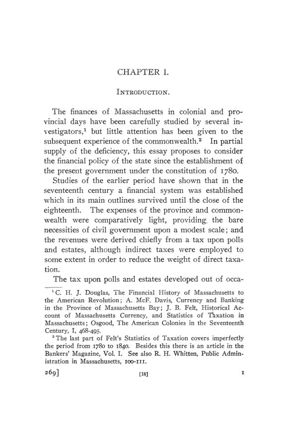

Bullock, 1907: 125 anos de dívidas e impostos em Massachusetts
Leitura: 10 min
Em 1907, Charles J. Bullock reconstituiu as contas de Massachusetts de 1780 a 1905: a dívida da Revolução, o estado sem imposto direto, o túnel Hoosac e a nova dívida metropolitana.


Em 1825, o Legislativo de Massachusetts não cobrou imposto estadual algum. Os impostos sobre bancos e leilões rendiam US$ 169.600 e prometiam crescer; a despesa ordinária havia caído para cerca de US$ 198 mil. Charles J. Bullock calcula que o gasto daquele ano equivalia a 35 centavos por habitante, provavelmente o menor valor da história do estado. O que veio depois é um dos fios do seu estudo: o imposto direto suspenso, a despesa em alta e uma sequência de déficits.
Historical Sketch of the Finances and Financial Policy of Massachusetts from 1780 to 1905 saiu em 1907 como o nº 2 do vol. 8 da terceira série das Publications of the American Economic Association. O autor divide a história fiscal do estado em seis períodos e fecha com a trajetória de longo prazo da despesa, da dívida e da receita, com base em relatórios do tesoureiro e do auditor, mensagens de governadores e documentos legislativos.
Como o estado saiu da dívida da Revolução?
Massachusetts saiu da era do papel-moeda com uma dívida de aproximadamente £ 1,5 milhão, ou US$ 5 milhões, à taxa de US$ 3,33 por libra local. Dos £ 1.407.895 em impostos diretos lançados entre 1780 e o fim de 1785, £ 279.437 não haviam sido cobrados. Em 1786, o governador James Bowdoin pediu ao Legislativo que sustentasse o crédito do estado; a resposta foi instruir o tesoureiro a não emitir ordens de cobrança dos impostos de 1785 e 1786. Veio a Rebelião de Shays, e os títulos consolidados chegaram a ser oferecidos a um sexto do valor de face.
Bullock rejeita a desculpa de que o povo não suportaria os impostos. Pelas contas de James Swan, de 1786, todos os encargos anuais, incluindo os juros e as requisições federais, somavam £ 213.826, cerca de US$ 1,75 por habitante. Mais US$ 0,75 por cabeça teriam quitado toda a dívida em quinze anos. Para o autor, a responsabilidade é da política hesitante do Legislativo.
Como Massachusetts ficou sem dívida e sem imposto direto?
Por 25 anos, o imposto estadual ficou praticamente fixo em US$ 133,4 mil. As terras do leste renderam US$ 896.281 de 1785 a 1820, e o estado comprou ações de bancos. Em 1812, ao menos US$ 1 milhão dos US$ 8 milhões de capital bancário de Massachusetts pertenciam ao governo. A frase do autor:
“Massachusetts, já não um devedor relapso, estava se tornando capitalista.” (“Massachusetts, no longer a tardy debtor, was turning capitalist.”)
No mesmo ano veio o primeiro imposto sobre corporações: meio por cento semestral sobre o capital dos bancos. A lei foi aprovada em 23 de junho de 1812; os jornais de Boston só noticiaram a declaração de guerra à Grã-Bretanha no dia 24. Bullock conclui que o tributo não se explica principalmente pela necessidade financeira: a ideia, prevista em cartas bancárias desde 1802, era que o estado participasse dos lucros do privilégio de emitir notas. Em 1814 já rendia US$ 107.569, cerca de dois terços do imposto sobre pessoas e bens. Em 1821, a velha dívida consolidada estava praticamente extinta.
O que aconteceu quando o imposto direto sumiu?
A despesa subiu mais depressa que a receita. Antes de 1826, os salários dos deputados eram cobrados das cidades junto com o imposto estadual; suspenso o imposto, o estado passou a pagá-los, e as cidades mandaram mais representantes. A folha do Legislativo foi de US$ 36.603 em 1825 para US$ 164.583 em 1837.
Nesse período o estado também entrou nas ferrovias. Em 1837 subscreveu US$ 1 milhão em ações da Western Railroad e, nos seis anos seguintes, emprestou US$ 5.050.000 a companhias ferroviárias. O investimento na Western deu certo. Bullock resume a fase como uma gestão desleixada das finanças, que só não acabou mal graças às terras públicas e à sorte nas ferrovias.
Quanto custou a Guerra Civil?
Sem contar os juros, a despesa de guerra do estado somou US$ 29.594.000 até 1868; as cidades gastaram outros US$ 13.010.000, e as contribuições privadas chegaram a US$ 8.857.000. A dívida direta passou de US$ 2,3 milhões em 1861 para US$ 21,6 milhões em 1868. O imposto estadual foi de US$ 300.372 em 1861 para US$ 4,7 milhões em 1865 e US$ 5 milhões em 1867, o maior valor registrado: de US$ 0,25 para US$ 3,71 por habitante entre 1861 e 1865.
Depois da emissão dos greenbacks, em 1862, o estado decidiu pagar juros e principal de seus títulos em ouro. A decisão custou US$ 3.703.186 até a volta da conversibilidade, em 1879. Em compensação, os títulos de 5% de Massachusetts eram cotados em Londres entre 86 e 88, vinte pontos acima dos títulos federais de mesma taxa. A guerra também mudou a receita: em 1862 vieram os impostos sobre depósitos de poupança e seguradoras; em 1864 e 1865, o imposto sobre o “excedente corporativo”.
Quanto custou o túnel Hoosac?
A Troy and Greenfield Railroad suspendeu as operações em 1861, e em 1863 o estado assumiu a obra. Em 1868 contratou a conclusão por US$ 4.594.000, com custo total estimado em US$ 9.262.000, estimativa que o autor chama de absurdamente baixa. Quando o túnel abriu, em 1876, o gasto já era de US$ 17.322.000, incluídos os juros.
“O estado se viu com um elefante branco nas mãos.” (“The commonwealth now found itself with a white elephant upon its hands.”)
Por causa deles, a dívida direta subiu de US$ 21,6 milhões em 1868 para US$ 33 milhões em 1881, embora a dívida para outros fins tivesse caído.
Por que a dívida voltou a crescer depois de 1889?
Em 1889, os fundos de amortização haviam reduzido a dívida líquida direta a US$ 5.616.000. Vieram então a ampliação da State House, a eliminação de passagens de nível, as estradas estaduais e, sobretudo, as obras metropolitanas de esgoto, água e parques, cuja dívida era paga por cidades. Somadas a direta e a contingente, as obrigações do estado chegaram a US$ 93,2 milhões em 1906. O governador Douglas falou em “aumento alarmante”; Bullock conclui que, com uma possível exceção, todos os empréstimos se justificaram.
A crítica do autor vai para outro item: o auxílio estadual a veteranos e famílias, que caíra para US$ 323 mil em 1885 e voltou a cerca de US$ 850 mil por ano, enquanto o governo federal pagava US$ 5.121.800 em pensões no estado em 1904. Ele atribui o aumento à pressão do “voto do soldado”.
De onde vinha a receita em 1905?
A receita tributária do estado foi de US$ 9,9 milhões: US$ 4,3 milhões de impostos sobre corporações, US$ 840,5 mil de licenças de bebidas, US$ 694,2 mil do imposto sobre heranças colaterais, criado em 1891, e US$ 4 milhões do imposto estadual. Desde 1880, os impostos auxiliares tinham crescido 121%, contra 68% da população. Ainda assim, o imposto estadual subiu de US$ 1,5 milhão em 1900 para US$ 4 milhões em 1905, e o autor fala no “apetite voraz” do Legislativo por toda receita disponível.
A conclusão desloca o problema para os municípios:
“Não é a tributação estadual, mas a local, que pesa severamente sobre o estado hoje.” (“Not state but local taxation presses severely upon the commonwealth at the present day.”)
Bullock registra a opinião da comissão tributária de 1897, de manter o imposto estadual como freio à despesa, e diz que a história de 1825 a 1853 e de 1890 a 1905 prova a necessidade desse freio.
Na minha leitura
Na minha leitura, a contribuição de método está na contabilidade. O autor reclassifica despesas pelo critério do auditor, separa orçamento ordinário de extraordinário, dívida direta de contingente e dívida bruta de líquida. Sem essas distinções, a dívida de 1906 pareceria um desastre; com elas, a maior parte era paga por cidades. O limite é o de quase toda história fiscal da época: valores per capita em dólares correntes, sem correção de preços, e um prejuízo do Hoosac que o próprio autor admite subestimado por não computar todos os juros.
O argumento mais duradouro, na minha leitura, é o da visibilidade do imposto. Quando a receita vinha de bancos e leilões, pouco sentida pelo eleitor, a despesa crescia; quando o imposto direto voltava, ela recuava. A segunda lição é sobre passivos contingentes: as garantias ferroviárias pareciam sem custo até que o Estado precisou assumir a obra. E há uma regra que o estado seguiu por um século: receitas eventuais, como terras e indenizações federais, iam para amortização ou fundos permanentes, não para o custeio.
Glossário
- Imposto estadual (state tax)
- imposto direto sobre pessoas e bens, repartido entre as cidades por cotas e cobrado junto com os impostos locais.
- Capitação (poll tax)
- imposto de valor fixo por homem adulto contribuinte, independente da renda ou da propriedade.
- Fundo de amortização (sinking fund)
- reserva aplicada em títulos para pagar uma dívida no vencimento.
- Dívida contingente
- obrigação que o Estado garante, mas que só paga se o devedor principal (ferrovia, cidade) não pagar.
- Assunção (assumption)
- transferência das dívidas estaduais da Revolução para o governo federal, aprovada em 1790.
- Excedente corporativo (corporate excess)
- valor das ações de uma empresa acima do valor dos imóveis e máquinas já tributados localmente; base do imposto estadual sobre franquias.
- Bills of credit
- papel-moeda emitido pelo governo colonial ou estadual, prometendo resgate futuro.
- Greenbacks
- papel-moeda federal não conversível emitido a partir de 1862, durante a Guerra Civil.
- Título serial (serial bond)
- título resgatado em parcelas anuais pelo orçamento ordinário, sem fundo de amortização.
- Imposto sobre heranças colaterais
- tributo sobre heranças e legados a parentes que não sejam descendentes ou ascendentes diretos.
Fontes
- Historical Sketch of the Finances and Financial Policy of Massachusetts (pp. 1–144). JSTOR · Internet Archive (PDF)
- Sumário da edição no JSTOR: Publications of the American Economic Association, 3ª série, vol. 8, nº 2.
Documento em domínio público (EUA, publicado antes de 1931), via JSTOR Early Journal Content e Internet Archive. Resumo e comentário do autor deste site, sem afiliação com a American Economic Association. Encontrou um erro? Escreva: a correção é publicada no próprio texto, com data.
← Nº 82 · Providence, 1906: a honra nos negócios e o salário arbitrado Nº 84 · O manual de 1907: 1.040 sócios e um boletim a caminho →